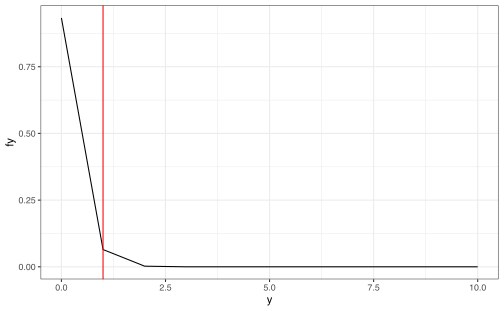

Capítulo 8 Análisis en componentes principales
8.1 Aprendizaje no-supervisado
Al contrario de los métodos que se han estudiado de regresión y clasificación, en este caso no hay variable dependiente, y el conjunto de datos está compuesto de \(p\) variables o características y \(n\) observaciones.
El principal objetivo del aprendizaje no-supervisado no es la predicción, sino en el análisis de datos por sí mismo, es decir se quiere buscar patrones o relaciones interesantes dentro de la tabla de datos: por ejemplo la visualización de datos o la identificación de subgrupos en los datos. (Análisis Exploratorio de Datos)
En el caso de aprendizaje no-supervisado, no es posible verificar o validar los métodos adoptados.
Si se quiere seleccionar la mejor proyección de 2 variables de una nube de puntos \(X_1,\dots, X_p\), se debe hacer \(\binom{p}{2}\) gráficos de dispersión. Un criterio de búsqueda es seleccionar la que tenga mayor información, en el sentido de mayor variabilidad.
Usaremos como base los libros de (Husson, Le, and Pagès 2017) y (James et al. 2013).
library(rgl)
library(car)
knitr::knit_hooks$set(webgl = hook_webgl, rgl = hook_rgl)
knitr::opts_chunk$set(fig.pos = "!h")set.seed(123)
x1 <- rnorm(1000, 0, 2)
x2 <- cos(rnorm(1000, 0, 2))
x3 <- x1 + rnorm(1000, 0, 2)GGally::ggpairs(data.frame(x1, x2, x3))
plot3d(x1, x2, x3, point.col = "black")
plot3d(scale(x1), scale(x2), scale(x3), point.col = "black")El ACP lo que busca es un número reducido de dimensión que represente el máximo de variabilidad en las observaciones eliminando la mayor cantidad de ruido posible.
8.2 Representación gráfica

Tomado de The shape of data
8.3 Primer componente principal
\[ Z_1 := \phi_{11}x_1 + \phi_{21}x_2 + \dots + \phi_{p1}x_p;\quad \text{con } \sum_{j=1}^{p}\phi_{j1} = 1\] tal que \(Z_1\) tenga la varianza máxima.
Al vector \(\phi_1 = (\phi_{11}, \phi_{21},\dots,\phi_{p1})\) se le llama pasos o cargas.
\(X = (X_1,\dots,X_p)_{n\times p}\) es la matriz de diseño donde cada columna tiene media 0. Se resuelve el problema \[\hat{\phi}_1=\underset{\Vert\phi_1\Vert_2^2=1}{\mathrm{argmax}} \left\lbrace\dfrac{1}{n}\sum_{i=1}^{n}\left(\sum_{i=1}^p \phi_{j1} X_{ij} \right)^2 \right\rbrace \] La restricción de minimización se puede rescribir como \(\Vert\phi_1\Vert_2^2= \sum_{j=1}^p \phi_{j1}^2 = 1\)
Los \(Z_{11},\dots, Z_{n1}\) son los scores del primer componente principal.
\(\phi_1\) es la dirección en el espacio característico en \(\mathbb{R}^p\) en donde los datos tengan la máxima varianza.
Esta última expresión se podría rescribir de forma matricial como
\[ \hat{\phi}_1 = \underset{\Vert\phi_1\Vert_2^2=1}{\mathrm{argmax}} \left\{ \phi_1^\top X^\top X \phi_1 \right\} \]
donde \(\phi_1 = (\phi_{11}, \phi_{21},\dots,\phi_{p1})\)
dadas las condiciones, esta expresión se podría simplificar un poco más en
\[ \hat{\phi}_1 = \underset{\phi_1}{\mathrm{argmax}} \left\{\frac{\phi_1^\top X^\top X \phi_1 }{\phi_1^\top \phi_1}\right\} \]
Dado que la expresión anterio es un coeficiente de Rayleigh, se puede probar que \(\hat{\phi}_{1}\) corresponde al primer vector propio de la matriz \(X^\top X = \mathrm{Cov}(X)\) si las columnas de \(X\) son centradas.
8.4 Segunda componente principal
\[ Z_{2}:= \phi_{12}x_1 + \phi_{22}x_2+\dots+\phi_{p2}x_p\] \[\underset{\Vert\phi_2\Vert_2^2=1}{\mathrm{argmax}} \left\lbrace\dfrac{1}{n}\sum_{i=1}^{n}\left(\sum_{i=1}^p \phi_{j2} X_{ij} \right)^2 \right\rbrace\] Se tiene, además, que \(\forall i\), \(Z_{i2}\perp Z_1\), entonces \[ Z_{i2}\perp Z_1 \implies \phi_{2} \perp \phi_{1}\]
Esto se logra primero construyendo una matriz nueva de diseño, restando a la matrix \(X\) original, el primer componente principal.
\[ \tilde{X}_2 = X - X\phi_1\phi_1^\top \]
Luego a esa matriz, se le aplica el procedimiento anterior
\[ \hat{\phi}_2 = \underset{\phi_2}{\mathrm{argmax}} \left\{\frac{\phi_2^\top X^\top X \phi_2 }{\phi_2^\top \phi_2}\right\} \]
Y nuevamente se puede probar que el componente principal corresponde al segundo vector propio de \(X^\top X = \mathrm{Cov}(X)\)
De la misma forma se construye \(\phi_3,\phi_4,\dots, \phi_p\).
Notas:
- Escalas: la varianza de las variables depende de las unidades. El problema es que los pesos \(\phi_i\) son distintos dependiendo de las escalas. La solución es estandarizar las variables: \(\dfrac{X_i-\mu_i}{\hat\sigma_i}\).
- Unicidad: los componentes principales son únicos, módulo cambio de signo. \end{itemize}
8.5 Circulo de correlaciones
Se puede construir la correlación de cada variable con respecto a cada componente principal
\[ cos(\theta_{i,j^\prime}) = \mathrm{Corr}(X_i, \mathrm{PC}_{j^\prime}) \]
El ángulo \(\theta_{i,j^\prime}\) significa la lejanía o cercanía de cierta variable con respecto a cada componente principal.
Además, basados en el el círculo identidad \(\cos^2(\theta)+\sin^2(\theta)=1\), el valor de \(cos^2(\theta_{i,j^\prime})\) representa la “intensidad” con la cual la variable \(X_i\) es representada por el componente principal \(\mathrm{PC}_{i^\prime}\).
8.6 Volvamos a nuestro ejemplo
library("factoextra")
library("FactoMineR")
p <- PCA(scale(cbind(x1, x2, x3)))p$var$cor## Dim.1 Dim.2 Dim.3
## x1 0.92280569 0.037753401 -0.38341145
## x2 -0.03690606 0.999225664 0.01363871
## x3 0.92346176 0.002207375 0.38368413p$var$cos2## Dim.1 Dim.2 Dim.3
## x1 0.851570337 1.425319e-03 0.1470043434
## x2 0.001362057 9.984519e-01 0.0001860145
## x3 0.852781615 4.872503e-06 0.14721351298.7 ¿Cuántos componentes usar?
fviz_screeplot(p, addlabels = F, ylim = c(0, 50)) +
xlab("Variables") + ylab("Porcentaje de varianza de Z explicada") +
labs(title = "Diagrama")
qplot(1:3, p$eig[, 3], geom = "point") + xlab("Cantidad de componentes") +
ylab("Varianza acumulada") + geom_line() + theme_minimal() +
geom_hline(yintercept = 80, color = "red") + scale_x_continuous(breaks = 1:10)
8.8 Laboratorio
Vamos a usar los datos decathlon de FactomineR que representa los resultados de varios atletas en pruebas de decathlon en el 2004.
El objetivo es encontrar si hay patrones entre ciudad y tipos de crimen.
Exploración de datos Ejecute una exploración de datos
## 100m Long.jump Shot.put High.jump 400m
## Min. :10.44 Min. :6.61 Min. :12.68 Min. :1.850 Min. :46.81
## 1st Qu.:10.85 1st Qu.:7.03 1st Qu.:13.88 1st Qu.:1.920 1st Qu.:48.93
## Median :10.98 Median :7.30 Median :14.57 Median :1.950 Median :49.40
## Mean :11.00 Mean :7.26 Mean :14.48 Mean :1.977 Mean :49.62
## 3rd Qu.:11.14 3rd Qu.:7.48 3rd Qu.:14.97 3rd Qu.:2.040 3rd Qu.:50.30
## Max. :11.64 Max. :7.96 Max. :16.36 Max. :2.150 Max. :53.20
## 110m.hurdle Discus Pole.vault Javeline
## Min. :13.97 Min. :37.92 Min. :4.200 Min. :50.31
## 1st Qu.:14.21 1st Qu.:41.90 1st Qu.:4.500 1st Qu.:55.27
## Median :14.48 Median :44.41 Median :4.800 Median :58.36
## Mean :14.61 Mean :44.33 Mean :4.762 Mean :58.32
## 3rd Qu.:14.98 3rd Qu.:46.07 3rd Qu.:4.920 3rd Qu.:60.89
## Max. :15.67 Max. :51.65 Max. :5.400 Max. :70.52
## 1500m Rank Points Competition
## Min. :262.1 Min. : 1.00 Min. :7313 Decastar:13
## 1st Qu.:271.0 1st Qu.: 6.00 1st Qu.:7802 OlympicG:28
## Median :278.1 Median :11.00 Median :8021
## Mean :279.0 Mean :12.12 Mean :8005
## 3rd Qu.:285.1 3rd Qu.:18.00 3rd Qu.:8122
## Max. :317.0 Max. :28.00 Max. :8893

plot(acp.decathlon$ind$coord[, 1], acp.decathlon$ind$coord[,
2])
plot(acp.decathlon$ind$coord[, 3], acp.decathlon$ind$coord[,
4])
## Ejercicios
- Del libro [@James2013b]
- Capítulo 10: 6, 8
`
<!--chapter:end:07-componentes-principales.Rmd-->
# Otros Clasificadores
## Clasificador Bayesiano
Bajo el modelo de aprendizaje estadístico, suponga que se quiere estimar $f$ usando el conjunto de entrenamiento $\{(x_1,y_1),\ldots,(x_n,y_n)\}$ donde $y_1,\ldots,y_n$ es categórica. Para evaluar la precisión del clasificador $\hat f$ podemos usar la tasa de error:
$$\frac 1 n \sum_{i=1}^nI(y_i\neq \hat y_i)$$
donde $\hat y_i$ es el nivel predecido de la variable categórica para el individuo $i$-ésimo. La tasa de error mide la proporción de observaciones mal clasificadas por $\hat f$ dentro del conjunto de entrenamiento. El mismo concepto se puede aplicar en el conjunto de prueba, es decir si $Z_0$ es el conjunto de índices de datos de prueba con tamaño $m$:
\begin{align}
\frac 1 m \sum_{i \in Z_0}I(y_i\neq \hat y_i)
(\#eq:cerror)
\end{align}
Decimos que un clasificador es bueno cuando el error de prueba en \@ref(eq:cerror) es el más pequeño.
Es posible demostrar que el error de prueba se minimiza cuando $\hat f$ asigna a cada observación el nivel con la probabilidad más alta dados los predictores, es decir se asigna la clase $j$ a la observación $x_0$ en donde
$$P(Y=j|X=x_0)$$
es máximo. A este clasificador se le llama *clasificador bayesiano*. En el caso en que el número de niveles o categorías de la variable dependiente es 2 ($j=1,2$), entonces se selecciona el nivel $j$-ésimo si:
$$P(Y=j|X=x_0)>0.5$$
Al conjunto $\{x_0: P(Y=j|X=x_0)=0.5\}$ se le llama frontera de decisión de Bayes.
La *tasa bayesiana de error* del clasificador para un conjunto de datos fijos es:
$1-\max_j P(Y=j|X=x_0)$. En general la tasa de error bayesiana sería:
$$1-E\left[\max_j P(Y=j|X)\right]$$
Para el caso de clasificación la tasa de error bayesiana es equivalente al error irreducible.
Inconveniente: en datos reales no conocemos $P(Y=j|X=x_0)$.
## Método de k vecinos más cercanos (KNN)
Este método aproxima la probabilidad condicional del clasificador bayesiano. Dado un entero $K$ y una observación de prueba $x_0$, el clasificador primero identifica el conjunto de observaciones que son más cercanas a $x_0$: $\mathcal N_0$. Entonces:
$$P(Y=j|X=x_0) := \frac{1}{K}\sum_{i \in \mathcal N_0}I(y_i=j)$$
y siguiendo la regla de bayes se selecciona la categoría con probabilidad condicional máxima.

## Análisis Discriminante
Recuerden que en el caso del modelo logístico, se tiene que:
$$P(Y=1|X=x)=\frac{e^{\beta_0+\beta_1X_1+\cdots+\beta_pX_p}}{1+e^{\beta_0+\beta_1X_1+\cdots+\beta_pX_p}}$$
donde $X_1,\ldots,X_p$ son los predictores. Para el modelo logístico tenemos los siguientes inconvenientes:
- Cuando las clases están muy separadas, los parámetros del modelo logístico tienden a ser muy inestables.
- Cuando la distribución de los predictores es aproximadamente normal en cada una de las clases, entonces el modelo discriminante lineal es más estable que el logístico.
- El modelo logístico aplica solamente en el caso de 2 clases.
Suponga que se quiere clasificar una observación en $K\geq 2$ clases. Sea $\pi_k$ la probabilidad previa de que la observación provenga de la clase $k$-ésima. Sea
$$f_k(x)=P(X=x|Y=k)$$
por el teorema de Bayes:
$$P_k(x):=P(Y=k|X=x)=\frac{\pi_kf_k(x)}{\sum_{l=1}^K \pi_lf_l(x)}$$
Estimación de los componentes:
- $\pi_k$: proporción de observaciones en el conjunto de entrenamiento que pertenecen a la clase $k$-ésima.
- $f_k(x)$: supuesto paramétrico que define el tipo de análisis discriminante.
### Análisis discriminante lineal
#### Caso p=1
Asuma que
$$f_k(x)=\frac{1}{\sqrt{2\pi}\sigma_k}\exp\left(-\frac{1}{2\sigma_k^2}(x-\mu_k)^2\right)$$
donde $\mu_k$ y $\sigma_k$ son la media y desviación estándar para cada clase en la variable dependiente. Asumiendo que $\sigma^2=\sigma_1^2=\cdots=\sigma_K^2$ se puede comprobar que el clasificador bayesiano asigna la clase $k$ si
\begin{align}
\delta_k(x)=x\frac{\mu_k}{\sigma^2}-\frac{\mu_k^2}{2\sigma^2}+\log(\pi_k)
(\#eq:LDA)
\end{align}
es el máximo entre los valores correspondientes a cada clase. A esta función se le llama *función discriminante*.
El método de análisis discriminante lineal (LDA) asume que:
\begin{align*}
\hat \mu_k&=\frac{1}{n_k}\sum_{i:y_i=k}x_i\\
\hat \sigma^2&=\frac{1}{n-K}\sum_{k=1}^K\sum_{i:y_i=k}(x_i-\hat \mu_k)^2\\
\hat \pi_k &=\frac{n_k}{n}
\end{align*}
como estimadores plug-in en \@ref(eq:LDA).
#### Caso p>1
Generalizando la sección anterior, podemos asumir que $X=(X_1,\ldots,X_p)$ proviene de una distribución Gaussiana multivariada. Es decir, asuma que las observaciones en la clase $k$ tienen distribución $N(\mu_k,\Sigma)$ donde $\mu_k$: vector de medias para la clase $k$ y $\Sigma$ es la matriz de varianza-covarianza para todas las $K$ clases.
La función discriminante en este caso sería:
$$\delta_k(x)=x^T\Sigma^{-1} \mu_k-\frac 1 2\mu_k^T \Sigma^{-1}\mu_k+\log \pi_k$$
El método LDA sustituye los parámetros en la fórmula anterior con estimadores empíricos, tal y como se hizo para $p=1$. La escogencia de la clase estimada sigue el mismo criterio.
![Simulación de Análisis Discriminante Lineal [@James2013b]](manual_figures/LDA.png)
### Análisis discriminante cuadrático
Bajo los supuestos del LDA, asuma que $\Sigma_k$ es la matriz de covarianza para la clase $k$. En este caso las funciones discriminantes tendrían la forma:
$$\delta_k(x)=-\frac 1 2 (x-\mu_k)^T\Sigma_k^{-1}(x-\mu_k)-\frac 1 2 \log |\Sigma_k|+\log \pi_k$$
Al uso de las funciones anteriores como herramientas de clasificación se le llama Análisis Discriminante Cuadrático (QDA).
Relación LDA vs QDA:
- LDA es menos flexible que QDA, por la diferencia en el número de parámetros. Por lo tanto LDA tiene menos varianza que QDA.
- Si el supuesto de varianzas constantes en LDA no es adecuado, entonces el sesgo es alto.
- QDA es más adecuado que LDA cuando el número de observaciones es relativamente alto, debido a que el supuesto de varianzas constantes es más difícil de alcanzar.
Comparación de métodos:
- LDA y regresión logística producen fronteras de decisión lineales.
- LDA asume más sobre el comportamiento de los datos, con respecto a la regresión logística.
- KNN es no paramétrico, por lo tanto produce fronteras de decisión más flexibles que LDA o QDA. El grado de suavidad del clasificador (en términos de sus fronteras) depende del parámetro $K$.
- QDA ofrece fronteras de decisión más flexibles que LDA o logística.
- KNN no tiene la misma capacidad de interpretabilidad que la regresión logística.
- Como KNN depende de la distancia entre observaciones, entonces la escala de las covariables importa.
## Laboratorio
Datos sociodemográficos y de productos de aseguramiento de 5822 clientes. La variable dependiente es si cada cliente adquirió un seguro de remolques (https://liacs.leidenuniv.nl/~puttenpwhvander/library/cc2000/data.html).
```r
library(ISLR)
data(Caravan)
dim(Caravan)## [1] 5822 86Vamos a usar las herramientas en el paquete tidymodels para efectuar una comparación entre los métodos de clasificación que hemos visto en clase. El objetivo es clasificar a los clientes entre compradores/no compradores del seguro (variable dependiente: Purchase, covariables: el resto)
library(tidymodels)## Error in library(tidymodels): there is no package called 'tidymodels'library(tidyverse)El primer paso es construir una separación de conjunto de entrenamiento y de conjunto de prueba:
set.seed(1234)
Caravan.split <- initial_split(Caravan, prop = 0.8,
strata = Purchase)## Error in initial_split(Caravan, prop = 0.8, strata = Purchase): could not find function "initial_split"Caravan.training <- Caravan.split %>%
training()## Error in training(.): could not find function "training"Caravan.testing <- Caravan.split %>%
testing()## Error in testing(.): could not find function "testing"Como vamos a usar el método KNN, lo conveniente es estandarizar todas las covariables:
Caravan.recipe <- recipe(Purchase ~ ., data = Caravan.training) %>%
step_normalize(all_predictors(), -all_outcomes())## Error in step_normalize(., all_predictors(), -all_outcomes()): could not find function "step_normalize"y aplicamos la receta sobre el conjunto de prueba para verificar que la receta funciona bien:
Caravan.recipe %>%
prep() %>%
bake(new_data = Caravan.testing)## Error in bake(., new_data = Caravan.testing): could not find function "bake"8.8.1 Clasificador logístico
Vamos a ajustar un modelo logístico a los datos. Primero especificamos el modelo:
modelo_logistico <- logistic_reg() %>%
set_engine("glm") %>%
set_mode("classification")## Error in set_mode(., "classification"): could not find function "set_mode"y después definimos un objeto tipo workflow para unir el tratamiento de datos (recipe) con el modelo:
logistico_wf <- workflow() %>%
add_model(modelo_logistico) %>%
add_recipe(Caravan.recipe)## Error in add_recipe(., Caravan.recipe): could not find function "add_recipe"y ajustamos el modelo:
logistico_ajuste <- logistico_wf %>%
fit(data = Caravan.training)## Error in fit(., data = Caravan.training): could not find function "fit"Obtenemos predicciones en el conjunto de prueba:
predicciones_probs <- predict(logistico_ajuste, new_data = Caravan.testing,
type = "prob")## Error in predict(logistico_ajuste, new_data = Caravan.testing, type = "prob"): object 'logistico_ajuste' not foundpredicciones_categ <- predict(logistico_ajuste, new_data = Caravan.testing)## Error in predict(logistico_ajuste, new_data = Caravan.testing): object 'logistico_ajuste' not foundhead(predicciones_probs)## Error in h(simpleError(msg, call)): error in evaluating the argument 'x' in selecting a method for function 'head': object 'predicciones_probs' not foundhead(predicciones_categ)## Error in h(simpleError(msg, call)): error in evaluating the argument 'x' in selecting a method for function 'head': object 'predicciones_categ' not foundUnimos todos los resultados en un solo arreglo:
resultados_logistico <- Caravan.testing %>%
select(Purchase) %>%
bind_cols(predicciones_categ) %>%
bind_cols(predicciones_probs)## Error in select(., Purchase): object 'Caravan.testing' not foundy podemos calcular la matriz de confusión:
conf_mat(resultados_logistico, truth = Purchase, estimate = .pred_class)## Error in conf_mat(resultados_logistico, truth = Purchase, estimate = .pred_class): could not find function "conf_mat"curva ROC:
roc_curve(resultados_logistico, truth = Purchase, estimate = .pred_No) %>%
autoplot()## Error in roc_curve(resultados_logistico, truth = Purchase, estimate = .pred_No): could not find function "roc_curve"y finalmente el área bajo la curva ROC:
roc_auc(resultados_logistico, truth = Purchase, estimate = .pred_No)## Error in roc_auc(resultados_logistico, truth = Purchase, estimate = .pred_No): could not find function "roc_auc"Existe otra alternativa de ajuste con el comando last_fit que automatiza el proceso:
last_fit_logistica <- logistico_wf %>%
last_fit(split = Caravan.split)## Error in last_fit(., split = Caravan.split): could not find function "last_fit"Obtenemos métricas:
last_fit_logistica %>%
collect_metrics()## Error in collect_metrics(.): could not find function "collect_metrics"y predicciones:
head(last_fit_logistica %>%
collect_predictions())## Error in h(simpleError(msg, call)): error in evaluating the argument 'x' in selecting a method for function 'head': could not find function "collect_predictions"8.8.2 Análisis Discriminante Lineal
Usando el mismo procedimiento de datos anterior, definimos el modelo LDA:
library(discrim)## Error in library(discrim): there is no package called 'discrim'modelo_lda <- discrim_linear() %>%
set_engine("MASS") %>%
set_mode("classification")## Error in set_mode(., "classification"): could not find function "set_mode"flujo de trabajo:
lda_wf <- workflow() %>%
add_model(modelo_lda) %>%
add_recipe(Caravan.recipe)## Error in add_recipe(., Caravan.recipe): could not find function "add_recipe"ajuste del modelo:
last_fit_lda <- lda_wf %>%
last_fit(split = Caravan.split)## Error in last_fit(., split = Caravan.split): could not find function "last_fit"Métricas de LDA:
last_fit_lda %>%
collect_metrics()## Error in collect_metrics(.): could not find function "collect_metrics"curva ROC:
lda_predicciones <- last_fit_lda %>%
collect_predictions()## Error in collect_predictions(.): could not find function "collect_predictions"lda_predicciones %>%
roc_curve(truth = Purchase, estimate = .pred_No) %>%
autoplot()## Error in roc_curve(., truth = Purchase, estimate = .pred_No): could not find function "roc_curve"y matriz de confusión:
lda_predicciones %>%
conf_mat(truth = Purchase, estimate = .pred_class)## Error in conf_mat(., truth = Purchase, estimate = .pred_class): could not find function "conf_mat"8.8.3 Análisis Discriminante Cuadrático
En este caso usaremos otro generador (klaR).
Nota: El argumento frac_common_cov=1 permite hacer LDA en lugar de QDA.
modelo_qda <- discrim_regularized(frac_common_cov = 0) %>%
set_engine("klaR") %>%
set_mode("classification")## Error in set_mode(., "classification"): could not find function "set_mode"library(klaR)## Error in library(klaR): there is no package called 'klaR'qda_wf <- workflow() %>%
add_model(modelo_qda) %>%
add_recipe(Caravan.recipe)## Error in add_recipe(., Caravan.recipe): could not find function "add_recipe"last_fit_qda <- qda_wf %>%
last_fit(split = Caravan.split)## Error in last_fit(., split = Caravan.split): could not find function "last_fit"last_fit_qda %>%
collect_metrics()## Error in collect_metrics(.): could not find function "collect_metrics"qda_predicciones <- last_fit_qda %>%
collect_predictions()## Error in collect_predictions(.): could not find function "collect_predictions"qda_predicciones %>%
roc_curve(truth = Purchase, estimate = .pred_No) %>%
autoplot()## Error in roc_curve(., truth = Purchase, estimate = .pred_No): could not find function "roc_curve"qda_predicciones %>%
conf_mat(truth = Purchase, estimate = .pred_class)## Error in conf_mat(., truth = Purchase, estimate = .pred_class): could not find function "conf_mat"8.8.4 K vecinos más cercanos
En el caso del KNN se va a seleccionar el número de vecinos a través de validación cruzada, usando como métrica el AUC. Primero definimos los conjuntos bajo el k-fold:
set.seed(178)
Caravan.folds <- vfold_cv(Caravan.training, v = 5,
strata = Purchase)## Error in vfold_cv(Caravan.training, v = 5, strata = Purchase): could not find function "vfold_cv"y definimos el modelo KNN y el flujo de trabajo:
modelo_knn <- nearest_neighbor(neighbors = tune()) %>%
set_engine("kknn") %>%
set_mode("classification")## Error in set_mode(., "classification"): could not find function "set_mode"knn_wf <- workflow() %>%
add_model(modelo_knn) %>%
add_recipe(Caravan.recipe)## Error in add_recipe(., Caravan.recipe): could not find function "add_recipe"Definimos una grilla de posibles valores de # de vecinos que usaremos en el k-fold:
k_grid <- tibble(neighbors = c(50, 75, 100, 125, 150,
175, 200, 225))
set.seed(178)
knn_tuning <- knn_wf %>%
tune_grid(resamples = Caravan.folds, grid = k_grid)## Error in tune_grid(., resamples = Caravan.folds, grid = k_grid): could not find function "tune_grid"y se selecciona el modelo con el mejor AUC:
knn_tuning %>%
show_best("roc_auc")## Error in show_best(., "roc_auc"): could not find function "show_best"mejor modelo y actualización del flujo de trabajo:
mejor_knn <- knn_tuning %>%
select_best(metric = "roc_auc")## Error in select_best(., metric = "roc_auc"): could not find function "select_best"final_knn_wf <- knn_wf %>%
finalize_workflow(mejor_knn)## Error in finalize_workflow(., mejor_knn): could not find function "finalize_workflow"Ahora ajustamos el modelo y analizamos su rendimiento con los conjuntos de entrenamiento y prueba iniciales:
last_fit_knn <- final_knn_wf %>%
last_fit(split = Caravan.split)## Error in last_fit(., split = Caravan.split): could not find function "last_fit"last_fit_knn %>%
collect_metrics()## Error in collect_metrics(.): could not find function "collect_metrics"knn_predicciones <- last_fit_knn %>%
collect_predictions()## Error in collect_predictions(.): could not find function "collect_predictions"knn_predicciones %>%
roc_curve(truth = Purchase, estimate = .pred_No) %>%
autoplot()## Error in roc_curve(., truth = Purchase, estimate = .pred_No): could not find function "roc_curve"knn_predicciones %>%
conf_mat(truth = Purchase, estimate = .pred_class)## Error in conf_mat(., truth = Purchase, estimate = .pred_class): could not find function "conf_mat"